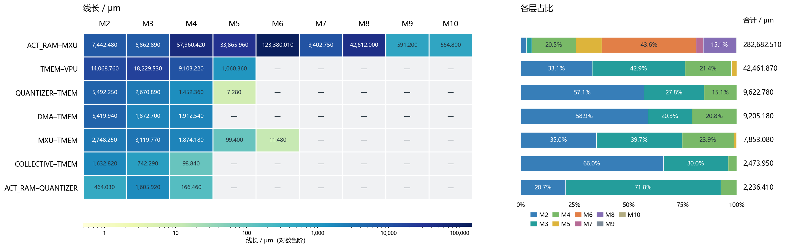
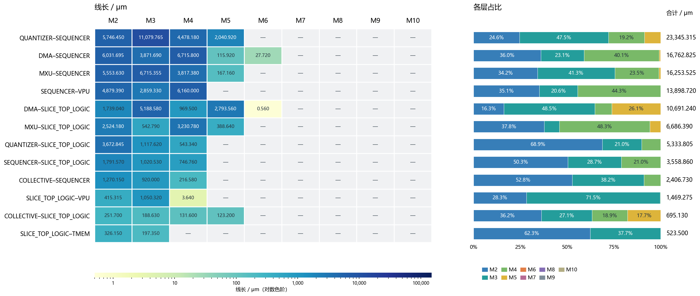
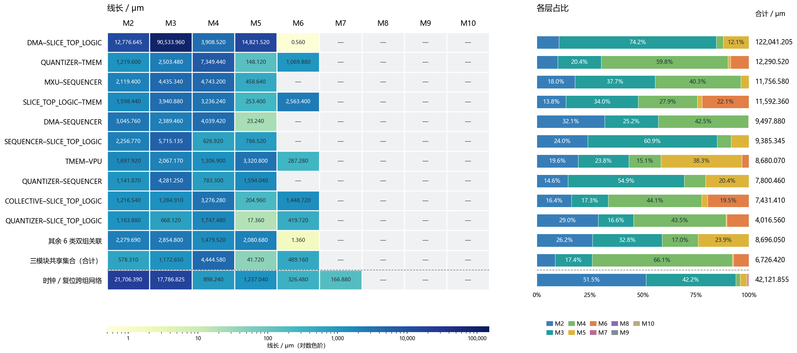
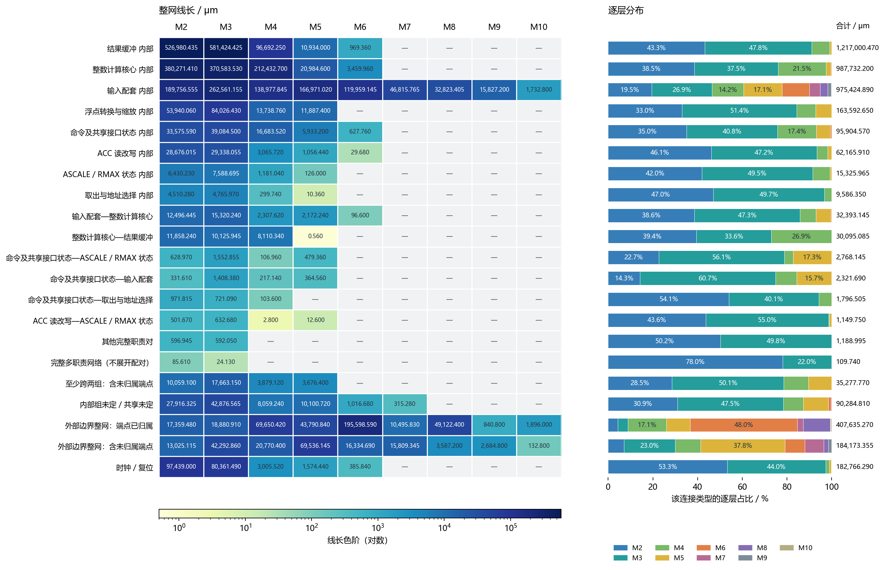
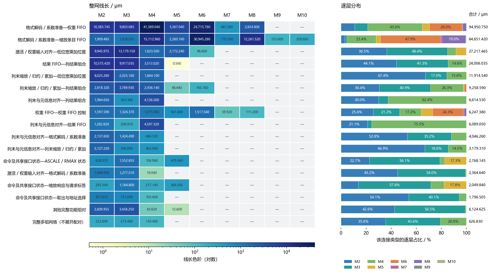
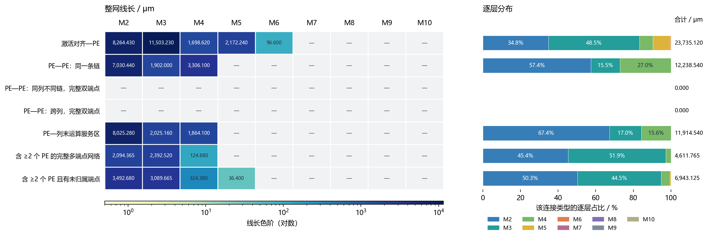

主分析｜固定 block 分区
分区定义：VPU、MXU、SEQUENCER、QUANTIZER、TMEM、DMA、ACT_RAM、COLLECTIVE、SLICE_TOP_LOGIC。
沿用已验证子系统粒度，不继续下沉到门或 buffer。SLICE_TOP_LOGIC 是父层剩余逻辑集合，33 个宏按既有子系统归属；宏内部金属不可见。
A 只用已核对的模块归属；B 还补入输出只连到一个已知寄存器组的逻辑。两者各统计同一批线，不能相加；B 的分区不等于原 RTL 边界。
728,129.530只用已知归属已确认跨块整网线长 / μm
728,129.530加入按输出连接补充分组后跨分区整网线长 / μm
13.11%推断视图仍共享／分区未定的线长
模块连接的逐层线长分布
左图为各层线长，右图为同类连接内的层占比；色阶为对数，数字是实际 μm，破折号表示该层为 0。长度是整条物理 net 的中心线长度，含块内支线，不等于模块边界之外的几何长度或接口带宽。明确标记的时钟／复位另列；其余网络仍包括控制和命令字段。模块对不表示传输方向。
计算与存储接口
7 类双模块连接，2,062 条 net，合计 356,535.780 μm。包含该接口的地址、使能、命令字段或数据等实际网络，不把整类都当作纯数据载荷。

命令、握手及顶层连接逻辑
12 类双模块连接，1,379 条 net，合计 101,625.315 μm。包含该接口的地址、使能、命令字段或数据等实际网络，不把整类都当作纯数据载荷。

含未归属端点的跨模块连接
共 1,780 条 net、262,036.715 μm；普通连接 219,914.860 μm，时钟／复位 42,121.855 μm。图中列出前 10 类普通双组关联，其余 6 类合并；三模块集合另外合计，时钟／复位在虚线下单列。完整明细在图后展开表中。
未归属端点指 cell 位置、引脚与连线已知，但尚不能可靠指定所属模块，例如插入的 buffer；不是线没有接上。网络至少涉及所列模块，可能还有其他模块，不能把整条线全部算成所列模块对的专属成本。其中 DMA–SLICE_TOP_LOGIC 的样本包括 b_rdata_i 等外存返回/分发网络；大线长不等于已经证明一个专用 DMA 数据通道。

MXU 内部连接的逐层线长
本节保留职责关系、功能组连接及 PE 连接的逐层线长统计。真实结构、细粒度布局、来源与 UNKNOWN 证据见 总报告的 MXU 结构与布局分析。
第一张「职责关系与金属层」：按输入配套、整数核心、结果缓冲等大职责分组，既列组内也列组间，并包含外部边界、未解析及时钟/复位，覆盖本次选定的全部网络。
第二张「内部功能组之间的连接」：细分输入对齐、PE、列末、结果组合、FIFO 等功能组，只列完整归属的组间普通网络；组内网络不在这张图中。
第三张「PE 相关连接」：保留各 PE 的列号和位置号，再聚合同链、跨链、跨列等关系，并单列涉及多个 PE 的多端点及部分未归属网络。
三张图是不同粒度与范围的重叠视图，不能相加。PE—列末在第一张属于整数核心内部，第二、三张才单列；不同 PE 的同链连接在第二张属于 PE 组内，第三张单列。左图是逐层整网线长（颜色为对数色阶），右图是各行自身的层占比。
主分析：职责关系与金属层
统计范围是直接接触来源确认 MXU 单元或唯一 MXU 服务单元的 214,003 条物理 net，整网线长 4,498,693.555 μm。包含组内线、跨组线、时钟/复位、外部边界和未解析网络。外部边界行包括 ACT_RAM、TMEM、SEQUENCER 等端点以及共享树干，不是 MXU 内部专属线长，也不是越过边界的纯线段长度。
整数核心 = PE + 列末运算 + 列末/元信息对齐 + PAIR 结果组合；输入配套 = 权重/缩放缓冲、请求标签、格式/系数准备和入口对齐。浮点后处理、ACC、结果缓冲、取出与共享控制分别保留。图中各行互斥，合计等于本次网络范围；完整多职责网络不展开成多个两两连接。

查看职责关系的数值与范围
逐层观察：在当前职责切分下，结果缓冲内部整网线长为 1,217,000.470 μm，其中 M2/M3 占 91.08%；整数核心内部为 987,732.200 μm，M2–M4 占 97.53%。结果 FIFO 的存储副本、选择和写使能具有显著实际开销，不能把 MXU 的布线都理解成乘加阵列互连。
输入配套内部为 975,424.890 μm，M5–M10 占 39.38%，比本案例的核心和结果缓冲更多使用高层。权重及缩放宏位于底部，而准备逻辑分布更广，符合宏接口连接较长的布局特征。这里只解释观察到的分布，不据此认定时序关键性。
完整归属的输入配套—整数核心连接为 32,393.145 μm，M2/M3 占 85.87%；整数核心—结果缓冲为 30,095.085 μm，M2/M3 占 73.05%。这些是端点齐全的子集，含未知端点的网络另外保留；不能把它们当作所有逻辑通道的总成本。
内部功能组之间的连接
下图仅显示全部直接端点可归属的普通信号网络；来源标签优先，其余使用唯一服务推断。时钟/复位、外部边界及含未归属端点的网络在上图单列。一个功能组可包含保留 RTL 子模块、命名状态或共享逻辑职责区，不能统一理解成独立 RTL module。

PE 相关连接：保留实际链结构
“同一条链”由相同列号且 floor(位置号/4) 相等确定。无论有多少条同类链，先按各 PE 身份判定，再聚合；不先把全部 PE 合成一个块。普通数据与控制均可能在内，未逐 bit 认定为操作数。下列各行互斥；包含多个 PE 的多端点或部分归属网络计一次，不生成 PE 对矩阵。

与 Gemmini 的对照
另按各自真实核心边界，重新汇总了完整归属、非时钟/复位的核心内部网络。Gemmini 将 PE 与 Mesh 阵列流水合并；唯一服务多个细组但都属于核心的组合逻辑可在此粗粒度认定为核心服务。入口/出口 ShiftSRAM 与转置仍合为双向对齐配套，没有强行拆成输入/输出。
这不是等工艺 PPA 排名：各行保留自身工艺与自身数值运算功能，仅展示层序分布。Gemmini 的网格流水与 MXU 的短链/列末运算在结构上不同；相同层号不代表相同 pitch/RC，绝对线长不能直接解释成架构优劣。表中为端点完整的核心内部子集，边界和未解析网络不在其中。
Gemmini 核心切分统计与输入哈希 · 只读对照脚本。
Gemmini 的 Mesh 及其 PE 可作为计算核心集合，但 ShiftSRAM 同时承担入口和出口对齐，应先核实端口方向再分两侧；本节没有将现有 Gemmini 数据强制改造成对称表。
逐层平均线长和范围（本次完整统计范围）
方法与复核
读取原始 ODB 导出的直接端点和 Nangate45 Liberty 引脚模型，跟踪组合单元的所有输出。只在全部路径终止于同一内部组、没有未知/外部/非数据控制/悬空/循环等阻碍时赋予服务标签。组内共享多个 PE 的单元只得到组标签，不能成为某一个 PE 的专属单元。没有跨过寄存器连接成伪物理 net，也未推测实际路由树的分支归属。时钟/复位沿用原提取的 sig_type/category 标记，不根据 CLKBUF 名称猜测。动态归并结果另以同一 ODB 图上的独立路径遍历抽样检查；这不等于独立网表重建验证。
全部切分、逐层线长 CSV · 统计与网络样本 · 逐单元服务推断与阻碍原因 · 逐单元归属及物理坐标 · 守恒与抽样核验 · 只读分析脚本
CSV 中 strict/service、职责/功能组/细单元以及内部/配对表是重叠视图，不能跨视图或类别表相加；每一个单独的 classes 表在本次网络范围内逐层守恒。
分析层次及职责边界
本次已完成直接端点分组与整网逐层记账。下列跨寄存器逻辑通道、路由树分支分摊、逐 bit 数据/控制认证和跨工艺归一化属于可选扩展，本次未实施。
主分析用共同职责边界；真实 RTL 子单元关系作为下一级；实现单元类型统计继续保留参考。计算核心是成员明确的统计集合，不要求恰好对应一个同名 RTL module。
此口径不要求两侧计算块数量相同，也不会将 MXU 的列末尺度恢复、结果缓存和浮点处理藏进普通 PE。入口对齐与核心内对齐按实际端口和阶段划分，不能仅凭 skew / pipeline 名称归类。
布线记账与可选扩展
本次已完成直接端点分组与整网逐层记账。下列跨寄存器逻辑通道、路由树分支分摊、逐 bit 数据/控制认证和跨工艺归一化属于可选扩展，本次未实施。
下文已给出来源与服务扩展后的布局及逐层布线。主表使用注明的职责边界，细表保留真实位置编号后聚合同类连接；未解析单元不强分组，整网线长不冒充子通道长度。